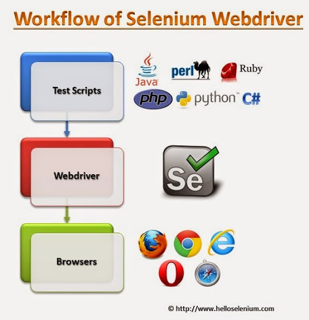

Figura 2 Diagrama Selenium
Figura 2 Diagrama SeleniumSelenium es una herramienta que permite realizar testing sin tener que emplear un lenguaje de scripting enfocado a pruebas, también permite automatizar los navegadores web en muchas plataformas y puede ser controlado por distintos lenguajes de programación, lenguajes de dominio especifico y testing frameworks.
Un Webdriver es una interfaz de control que permite la introspección y control de agentes de usuario. Proporciona un protocolo de conexión para para manejar remotamente el comportamiento de los navegadores web. Permite la manipulación de los elementos del árbol DOM en los documentos web.
Es utilizado principalmente para permitir pruebas automatizadas de agente de usuario a partir de un proceso de control separado , pero también permite controlar los navegadores mediante scripts.
 Figura 1 Workflow Selenium
Figura 2 Diagrama Selenium
En general Selenium esta enfocado al testing de aplicaciones web, pero también es posible automatizar tareas de administración web y cuenta con el apoyo de importantes navegares web como por ejemplo Mozilla Firefox.
 Figura 3 Ejemplo Selenium visualmente ## Tutorial
Figura 3 Ejemplo Selenium visualmente ## Tutorial
En el tutorial se utilizará la práctica Conversor de Temperatura realizada con anterioridad.
Se debe crear la estructura de la aplicación con Express-Generator, o en si lo prefiere usar la de la práctica 5.
npm install --save
selenium-webdriver@2.48.2
mocha@2.3.3
chai@"3.4.1
chai-as-promised@5.1.0
coffee-script@ "1.10.0Una vez se ha creado la estructura de la aplicación, se procede a crear un directorio 'tests' y donde se almacenarán los ficheros que contienen el código que realizará los test a nuestra aplicación.
Se crea el fichero test.coffee y se añade:
Importación modulos necesarios
webdriver = require 'selenium-webdriver'
chai = require 'chai'
chai.use require 'chai-as-promised'
expect = chai.expectSe especifica que webdriver se va a utilizar, con que navegador.
before ->
@timeout 10000
@driver = new webdriver.Builder()
.withCapabilities(webdriver.Capabilities.firefox())
.build()
@driver.getWindowHandle()Despues de finalizar las pruebas, se cierra y limpia el navegador.
after ->
@driver.quit();Despues se empieza a poner los test dentro del bloque describe, para que estén en un lugar lógico.
describe 'Webdriver tutorial', ->
###
... Some tests ...
###e.g. : Ir a una página
it 'Should let me go to the URL and see the page\'s title', ->
@driver.get 'google.com'
@timeout 5000
expect(@driver.getTitle()).to.eventually.contain 'Google'Manipular elementos árbol DOM
@driver.findElement(linkText: 'Imagenes')
@driver.findElement(xpath: '//[@id="content"]/div/article/div/pre[1]')
@driver.findElement(js: 'return document.getElementById("Result")')
@driver.findElement(id: 'labelID')
@driver.findElement(name: 'consulta')Interactuar con la págetWindowHandle
it 'links back to the Google\'s index, ->
@driver.findElement(linkText: 'Google').click()
expect(@driver.getCurrentUrl()).to.eventually.equal 'http://www.google.com/'Una vez se tengan los test implementados se corren con el comando:
mocha tests/test.coffee --compilers coffee:coffee-script/registerEs posible se abra un navegador y se mueva solo, ver Figura 3. En el caso de tener la aplicación corriendo en un servidor sin desktop environtment es necesario emular un navegador, para esto es necesario installar un X virtual framebuffer:
apt-get install XvfbSe debe instalar también un navegador que en nuestro caso es Firefox En la ruta
/etc/apt/sources.listComo root añadir
ppa:mozillateam/firefox-stableSeguido se actualiza e instala
sudo apt-get update
sudo apt-get install firefoxUna vez todo instalado, se procede a correr Xvfb en una terminal, para este tutorial asumimos un display, 10.
sudo Xvfb :10 -acSe mínimiza esta terminal.
Antes de ejecutar las pruebas es necesario establecer la variable de ambiente DISPLAY
export DISPLAY=:10Se ejecutan los test
mocha tests/test.coffee --compilers coffee:coffee-script/registerJosé Joaquín Escobar Gómez.
Estudiante Ing. Informática
quinoescobar@gmail.com
Universidad de La Laguna
San Cristóbal de La Laguna - EspañaEnlace página Selenium
Enlace página guía de usuario selenium-webdriver
Enlace página Coffee Script
Enlace página Chai
Enlace página Chai-as-promised
Enlace página Mocha
Enlace Repositorio SeleniumExpo
Enlace página author Quinoescobar